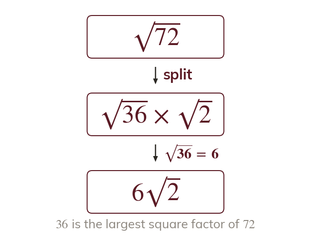
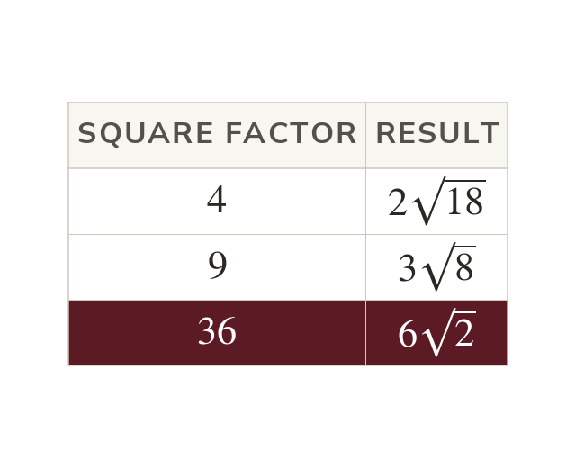
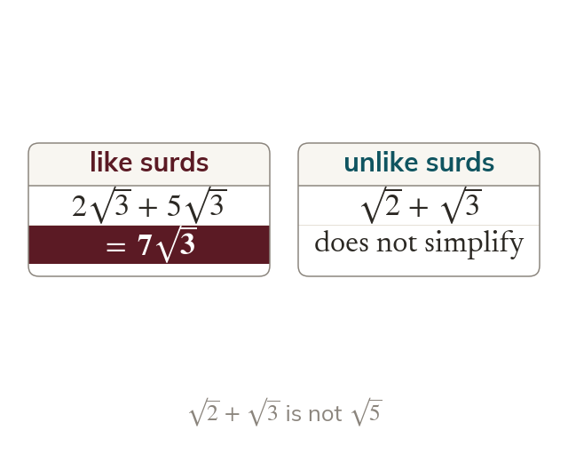
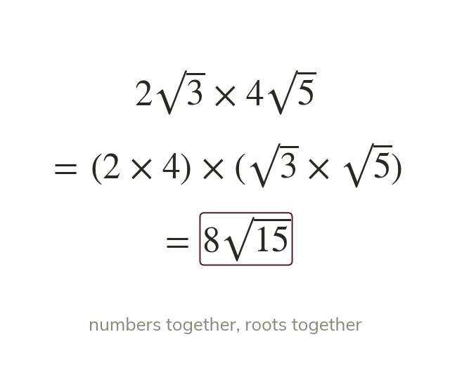
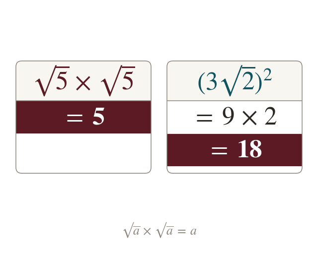
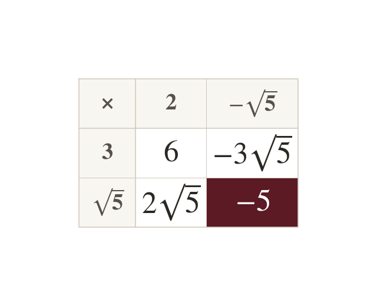

Splitting a root
so a root can be split into a square part and the rest. So
Exact answers in surd form run through the course, from the quadratic formula to lengths and gradients. The next lesson removes surds from the denominator of a fraction.
Work down the page at your own pace. Write every answer in your book first, then click to check it.
Read each card, then follow the worked examples one step at a time.

so a root can be split into a square part and the rest. So

Use the largest square factor, or the surd is not fully simplified. is true but not finished.

Only multiples of the same surd collect, as like terms do. So but stays as it is.
Pick an answer. If it's wrong, the feedback tells you which mistake it was.
Write the blanks in your book first, then tap each one to check.
Read each card, then follow the worked examples one step at a time.

Whole numbers multiply with whole numbers, and roots with roots. So

so a repeated surd becomes a whole number. So

Expand as in algebra, every term times every term, then simplify each product. So
Pick an answer. If it's wrong, the feedback tells you which mistake it was.
Write the blanks in your book first, then tap each one to check.
Finished? Next lesson: 12.P1.6 Rationalising Denominators.
For each skill, tap the one that is true for you today. Your Revise pages start with anything you mark Not yet.
Your ratings are saved on this device only.
Log in, then search for a code to practise that skill.